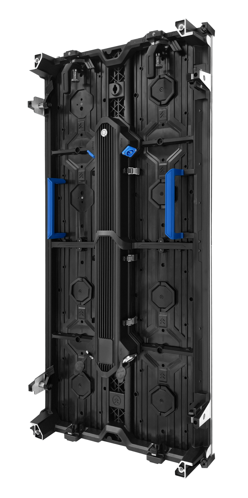

A ski resort is an extreme environment for electronics. Screens sit at altitude, in wind, in drifting snow, and in temperatures that fall far below the operating range of ordinary commercial displays. A board that works perfectly at sea level can refuse to start at minus twenty on a busy Saturday morning.
The payoff for getting it right is real, because guests navigate slopes with limited information and high consequence. Accurate trail maps, lift status, and weather warnings reduce confusion at the base, keep guests safer on the mountain, and lift satisfaction scores at busy information desks.
Mountain resorts have been steadily digitizing guest information over the past several years, and displays sit at the center of that shift. Paper trail maps go out of date the moment a lift closes for wind, whereas a digital board can show the current state of every run within seconds of a decision by the patrol team.
The strongest driver is safety communication. Avalanche risk, wind-hold status, and lift closures change through the day, and guests need to see the current picture before they commit to a route. A well-placed display at the base station and at mid-mountain lift huts becomes the most-read surface on the property during a storm.
A second driver is revenue and experience in the lodge. Resorts are no longer just lift tickets and rentals; they sell lessons, dining, spa, and events. Digital screens in the arrival area and around the lodge let operators promote today's availability, fill a lesson group that is one person short, and guide guests toward underused facilities.
Finally, there is the operational reality of altitude. Snowmaking, grooming, and patrol teams need live information outdoors at the top of the mountain, where UV exposure, freeze-thaw cycling, and condensation are routine. That pushes the specification toward cold-rated, sealed, high-brightness outdoor cabinets rather than any product intended for a warm indoor lobby.
Access is a constraint that shapes everything else. Screens mounted high on the mountain are hard to reach in winter, and a service visit may need a snowcat, a lift ride, or a weather window that closes for days. That makes remote monitoring and a local stock of spare modules far more valuable on a ski hill than in a city installation where a technician arrives in an hour.
Finally, the resort brand is part of the brief. Ski areas compete for the same guests, and the arrival area, the lift stations, and the lodge all contribute to how premium the property feels. Displays that look sharp, show accurate information, and match the resort's visual identity do brand work every day of the season, not just during a marketing campaign.
Guest flow completes the picture. Arrival, ticket purchase, rental, lift loading, and lodge dining are separate moments with separate information needs, and each is a place where a well-positioned screen removes a question. Mapping those moments before selecting hardware usually reveals that a resort needs a handful of smaller, correctly placed screens rather than one enormous display in a central spot nobody lingers near.
Snow and wind also dictate the mounting hardware, not just the cabinet. Brackets must be rated for the wind load at the exposure of the site, and a screen at an exposed ridge top sees far more stress than one sheltered by the lodge. Confirm the mounting design against the actual exposure before the steel is fabricated.
Mountain signage divides into outdoor boards that must survive the weather directly and indoor screens that only have to handle a cold but sheltered lodge interior. Both need to cope with sub-zero starts, but the outdoor units carry the full weather and UV load.
The table below maps typical ski resort positions to Asia Vision series. For any outdoor position, confirm the lowest expected ambient temperature and specify the heated cold-start option where readings below minus twenty are normal.
Mounting position drives more of the outcome than product choice. A trail map must be readable from the queue without blocking foot traffic, which usually means mounting above head height with a slight downward tilt so the board is not covered by drifting snow. A lift status board should be visible from the loading area at the exact point where a skier decides whether to ride.
Character size again sets the requirement. A guest reads a status board from perhaps ten to fifteen meters while wearing gloves and goggles, so capital letters need to be generous and the layout should avoid dense blocks of small text. Use large icons for lift status and reserve small type for detail that only matters once the guest has stopped to read.
Weather content should be designed for goggles and flat light. Contrast matters more than color saturation, because a low-light storm reduces the eye's ability to separate subtle tones. Pair a strong shape or icon with the text so a skier can read the status even before the letters resolve.
For lodge interiors, the priority shifts to comfort and warmth. An indoor wall should dim down to match the low light of an evening dining room, so choose a product with a smooth dimming curve and check that it does not glare against timber and low-level lighting. The wall is there to complement the space rather than dominate it.
| Position | Series | Typical Pixel Pitch | Key Specification |
|---|---|---|---|
| Base area trail map | D-PRO | P5 | 5500 nits, heated cold start, sealed IP65 cabinet |
| Mid-mountain lift status board | D-PRO | P5 to P6 | High brightness, wide temperature range, anti-ice front |
| Lodge entertainment wall | CV-PRO COB | P1.9 | Ultra-slim, high contrast, warm-lodge aesthetic |
| Weather and snow report board | D-PRO | P6 | Auto brightness, UV-stable front face, cold-rated electronics |
| Ticketing and rental wayfinding | 54-inch series | P1.9 | Compact indoor format, readable at short range, front service |
Cold is the defining challenge, and Asia Vision addresses it at the component level rather than with a software workaround. Outdoor units are built with an integrated heating option that brings the cabinet up to operating temperature before the electronics begin driving current, so a screen mounted at the top of a lift line starts cleanly on the coldest morning of the season.
Sealing protects against the freeze-thaw cycle that kills cheap outdoor signage. Water enters a cabinet, freezes overnight, expands, and then damages the module or the power path when it thaws. IP65 front protection and careful gasket design keep meltwater out, and the aluminum housing resists the corrosion that road salt and wet snow accelerate at the base area.
Brightness is set for the alpine sky, which is one of the brightest backgrounds a display will ever face. D-PRO outdoor screens deliver 5000 nits and above with automatic dimming, so the map stays readable in full sun on a snowfield and drops to a comfortable level after dark. The reflective snow surface makes correct brightness control more important here than in almost any other venue.
Supply is factory-direct, with CE, FCC, and RoHS documentation standard and regional marks handled per project. Delivery is 15 to 20 working days, the warranty runs three years, and Asia Vision provides remote commissioning support together with cold-weather spares so a resort can keep signage running through the entire season.
Resort projects also benefit from the ability to supply a full signage program from one source rather than one screen. A single order can cover cold-rated outdoor trail and lift boards, lodge entertainment walls, and indoor ticketing wayfinding, with consistent calibration and a shared control approach. For a resort team running a season with a small maintenance crew, dealing with one supplier and one documentation set removes a surprising amount of administrative load.
Altitude training and race timing add a further use case. Timing boards, results screens, and sponsor messaging for competitions are usually added to the same display estate once the information infrastructure exists, so it is worth sizing the control system for more screens than the first phase requires.
Certification is handled per market as part of the order. Alpine resorts sit in several jurisdictions and may need different marks depending on where the property is registered, so Asia Vision arranges the paperwork for the destination market rather than shipping a single generic documentation set.
For this requirement our range covers it directly: the COB EF outdoor series (IP65, 3000 nits) and the D-PRO outdoor series (front maintenance).